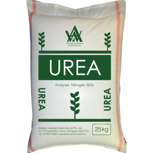
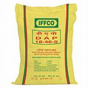
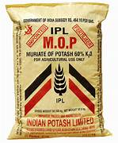
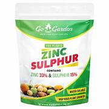
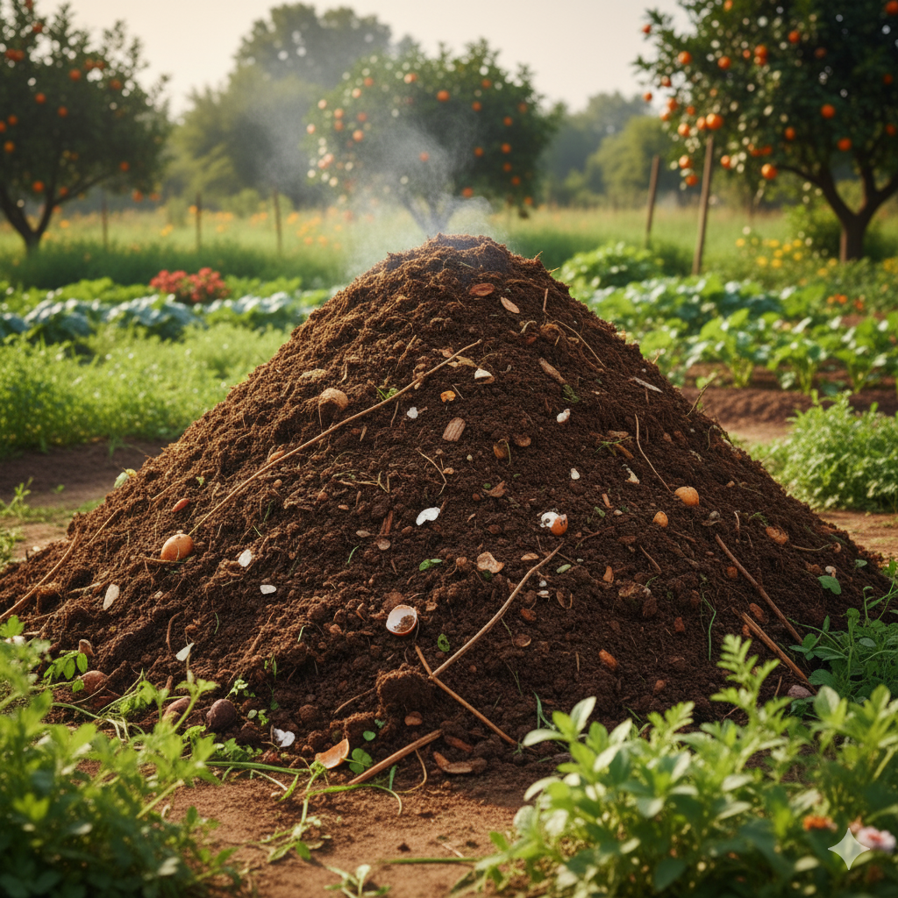
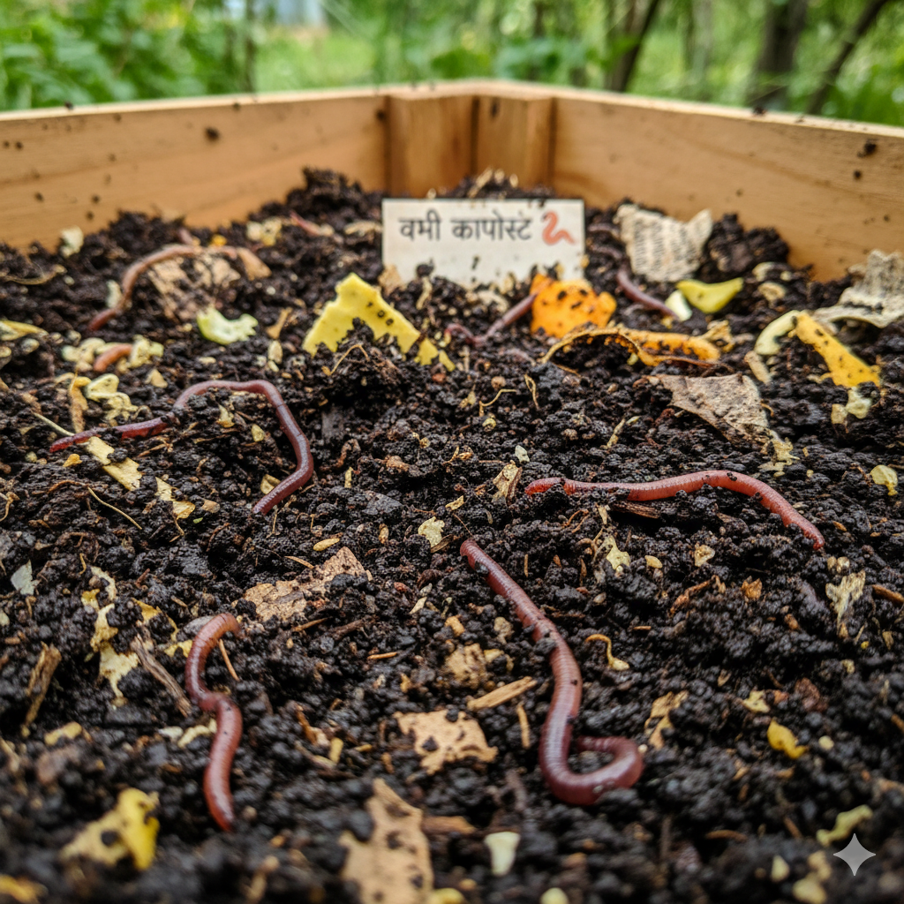
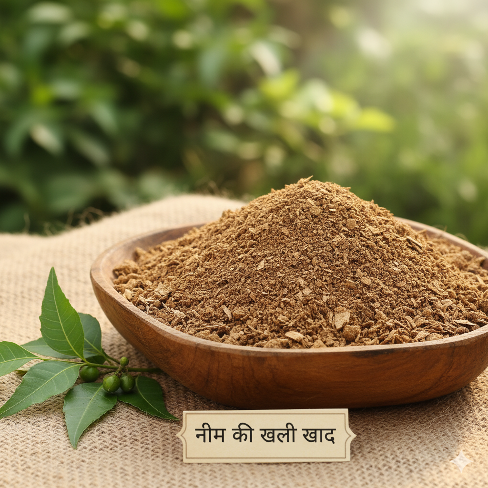

Types of Fertilizers and Their Uses
Know the right fertilizer for the right crop at the right time.
In-Organic Fertilizers Details
Nitrogen-based Fertilizers (N) 🌾

Examples: Urea, Ammonium Nitrate
Use: Leaf growth, green color, protein formation
Best for: Wheat, Rice, Maize
Phosphorus-based Fertilizers (P) ⚡

Examples: DAP (Diammonium Phosphate), SSP
Use: Root development, flower & seed production
Best for: Pulses, Oilseeds
Potassium-based Fertilizers (K) 🍌

Examples: MOP (Muriate of Potash), SOP (Sulphate of Potash)
Use: Disease resistance, water regulation, fruit quality
Best for: Sugarcane, Banana, Potato
Micronutrient Fertilizers 🧪

Examples: Zinc Sulphate, Boron, Copper, Iron Chelates
Use: Plant enzymes, chlorophyll, overall health
Best for: Fruits, Vegetables
Organic Fertilizers Details
गोबर की खाद (Farmyard Manure, FYM) 🐄

Composition: Cow dung, urine, bedding material
Benefits: Improves soil structure, water retention
Best for: All crops, especially vegetables
Application: 10-15 tons per hectare
कम्पोस्ट (Compost) ♻️

Composition: Decomposed organic waste, kitchen scraps
Benefits: Rich in nutrients, improves soil fertility
Best for: Garden crops, potted plants
Application: 5-10 tons per hectare
वर्मी कम्पोस्ट (Vermicompost) 🪱

Composition: Earthworm-processed organic matter
Benefits: High nutrient content, beneficial microbes
Best for: High-value crops, organic farming
Application: 2-5 tons per hectare
नीम की खली (Neem Cake) 🌿

Composition: Neem seed residue after oil extraction
Benefits: Natural pesticide properties, soil conditioner
Best for: Pest-prone crops, organic pest control
Application: 1-2 tons per hectare